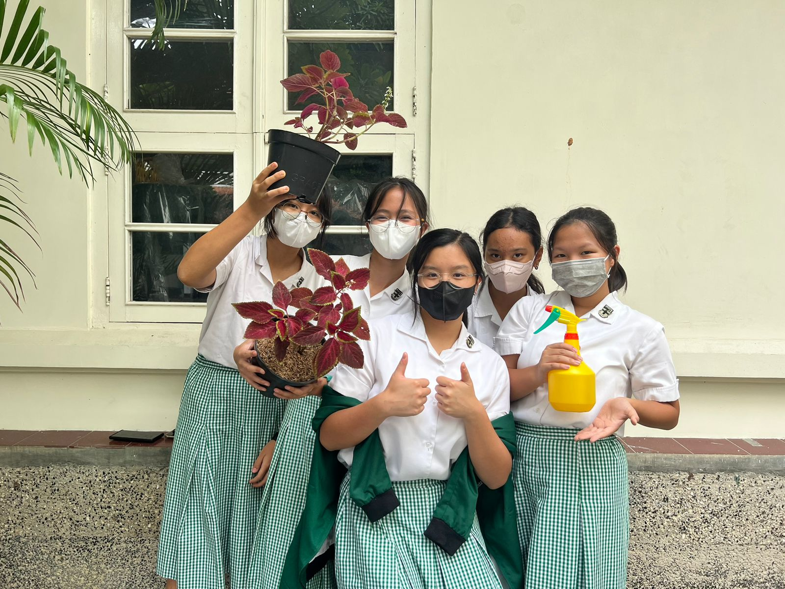

BAB IV
PEMBAHASAN HASIL PENELITIAN
Para peneliti mengamati perubahan tanaman selama 4 minggu. Pengaplikasian pestisida dilakukan 1 kali tiap hari. Pertama-tama kami menyiramkan kedua tanaman menggunakan air biasa, lalu 1 tanaman diberi pestisida. Setelah melakukan pengamatan selama 4 minggu, diperoleh hasil sebagai berikut:

Selama 4 minggu mengamati perubahan tanaman yang diaplikasikan pestisida 1 kali setiap hari, menurut hipotesis, pestisida organik yang dibuat ini dapat mengusir hama hewan maupun tumbuhan dengan aman karena saat diaplikasikan, akan membunuh hama saat itu juga dan setelah hamanya mati, residunya akan hilang di alam. Pestisida organik ini belum tampak membunuh hama selama minggu 1-3 karena adanya lubang-lubang pada daun tanaman pestisida, namun pada minggu keempat lubang-lubang pada daun tanaman mulai berkurang, dan tidak ada tanda-tanda hama hidup maupun gejala penyakit pada tanaman. Residu pestisida hilang pada hari berikutnya karena tidak ada warna, aroma, maupun tekstur yang ditinggalkan oleh pestisida organik. Kemudian, pestisida tidak membunuh tanaman, tetapi membuat warna tanaman menjadi pudar pada minggu ke-4, hal ini juga terjadi pada tanaman kontrol.
Masalah muncul ketika pada minggu ke-4 tanaman yang menggunakan pestisida memiliki tanah yang pecah-pecah, serta tanaman yang tampak layu.
Hal ini mungkin bisa terjadi karena beberapa kemungkinan yakni;
- Pestisida ditinggal terlalu lama sehingga pestisida tidak dapat bekerja dengan efektif.
- Sifat pestisida organik yang mudah terurai, pestisida menjadi rusak karena terlalu banyak terpapar sinar matahari atau hujan.
- Pestisida organik yang cenderung memerlukan lebih banyak waktu untuk bisa efektif.
- Bahan yang digunakan kurang tepat karena kami mencari alternatif dari bahan yang kami tidak bisa cari.
Kemungkinan pertama adalah pestisida yang kami buat ditinggal terlalu lama sehingga pestisida tidak dapat bekerja dengan efektif. Menurut landasan teori yang telah kami buat, dinyatakan bahwa pestisida organik harus segera diaplikasikan ke tanaman setelah dibuat sehingga harus dibuat baru setiap kali mau mengaplikasikannya kepada tanaman. Namun, kami tidak membuat baru pestisidanya jadi kita hanya membuat sekali lalu menggunakannya untuk 4 minggu berturut-turut. Ini menjadi salah satu alasan mengapa pestisida yang kami gunakan tidak bekerja secara efektif karena kita tidak membuat baru/menggunakan pestisida yang sama untuk 4 minggu berturut-turut.
Kemudian, untuk kemungkinan nomor 3, Pestisida yang kami buat merupakan pestisida organik dimana cenderung memerlukan lebih banyak waktu untuk bisa efektif. Kami melakukan penelitian hanya selama 4 minggu. Pengaplikasian pestisidanya juga masih kurang rutin, belum full setiap hari. Terkadang, masih ada beberapa hari dimana kami lupa untuk mengaplikasikan pestisida tersebut. Growers often choose organic pesticides because they are less “persistent” than some synthetic alternatives. This means that organic pesticides typically break down in the environment, leaving no residual activity after a relatively short time. While this can be desirable, it may require that you apply the pesticide more frequently to get the desired control. This can result in a greater total volume of pesticide being applied than if you used a more persistent product. (McCoy 2020:2). Disini dijelaskan bahwa kebanyakan petani memilih menggunakan pestisida organik dikarenakan dampak yang diberikan pestisida ini tidak dapat merusak lingkungan sekitar. Akan tetapi, dalam proses pengaplikasian pestisida organik, harus dilakukan secara berkala dan dapat memerlukan waktu yang lama. Namun, waktu yang lama tersebut dapat membuahkan hasil yang memuaskan. Tanaman akan bebas dari hama. Tetapi, pengaplikasian yang sering juga dapat merusak tanah dari tanaman. Oleh karena itu, walaupun diaplikasikan secara berkala, jangan terlalu banyak dalam setiap pengaplikasian.
Because organic pesticides are less persistent and can be more selective than synthetics, applicators often need to know more about the target pest if they want to control it successfully. Accurate pest identification and knowledge of the pest lifecycle is crucial when using organic pesticides. Proper timing of pesticide applications can be key for effective control. (McCoy 2020:2). Karena pestisida organik kurang persisten dan lebih selektif daripada pestisida sintetis, aplikator seringkali perlu mengetahui lebih banyak tentang hama sasaran jika ingin berhasil mengendalikannya. Identifikasi hama yang akurat dan pengetahuan tentang siklus hidup hama sangat penting saat menggunakan pestisida organik. Waktu aplikasi pestisida yang tepat juga dapat menjadi kunci untuk pengendalian yang efektif.
Pernyataan dari McCoy ini menambahkan kemungkinan bahwa kami salah menargetkan pestisida organik (pada hama). Awalnya, target hama yang akan dibasmi adalah ulat-ulat mengganggu yang banyak membuat lubang-lubang pada daun. Ulat-ulat tersebut memang hilang dalam waktu 4 minggu, tetapi ada kemungkinan juga pestisida ini dapat mengusir atau bahkan membunuh serangga dan bakteri yang dapat bermanfaat.
4.1 Dampak Pestisida Organik pada Tumbuhan
Setelah penggunaan pestisida organik yang sama selama 4 minggu, terjadi perkembangan pada jumlah lubang pada daun pestisida organik, Tanaman pestisida pada awalnya memiliki banyak lubang pada daun tanaman pestisida, namun pada minggu keempat lubang-lubang pada daun tanaman mulai berkurang, dan tidak ada tanda-tanda hama hidup maupun gejala penyakit pada tanaman. Kemudian, pestisida tidak membunuh tanaman, tetapi membuat warna tanaman menjadi pudar pada minggu ke-4, selain itu tanaman yang menggunakan pestisida memiliki tanah yang pecah-pecah, serta tanaman yang tampak layu.4.2 Dampak Pestisida Organik pada Lingkungan
Residu pestisida hilang pada hari berikutnya karena tidak ada warna, aroma, maupun tekstur yang ditinggalkan oleh pestisida organik. Tanaman kontrol yang bersebelahan dengan tanaman pestisida tidak mendapatkan keuntungan maupun kerugian dari penggunaan pestisida organik.4.3 Efektivitas Pestisida Organik dalam Pengendalian Hama
Pestisida organik belum terbukti sangat efektif terhadap pengendalian hama. Di berbagai sumber, diberitahukan bahwa pestisida organik memiliki kekuatan yang lebih lemah daripada pestisida dengan bahan dasar kimia. Hal ini karena pestisida kimia membunuh hama di tanaman, sedangkan pestisida organik hanya menghindari hama dari tanaman. Karena pestisida organik kurang persisten dan lebih selektif daripada pestisida sintetis, aplikator seringkali perlu mengetahui lebih banyak tentang hama sasaran jika ingin berhasil mengendalikannya. Peneliti belum melakukan hal ini, yang juga bisa berkontribusi pada faktor rendahnya efektivitas pestisida organik dalam pengendalian hama.Playlist - !!
Guess what we made to accompany you scrolling through our report! Yes, we made a playlist full of our top picks!
Gallery -!!


